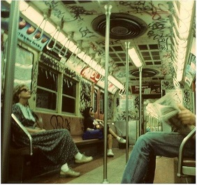
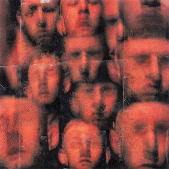

O que eu era antes de você O que eu era antes de você? apenas ilusão perdida... um alma sofrida... uma brisa esquecida... uma mente dolorida... não corra, não fuja... por que se correres eu correrei... se partires eu partirei... e se morreres eu morrerei... por que eu só sofria e morria na dor... sentia o medo e o rancor e o meu medo infinito do torpor... uma alma de dor? um coração sem amor? uma pessoa esquecida?
é tudo que eu era antes de você...

Estrada Tortuosa
Afogado com meus medos infantis, torturado pelas minhas crianças do passado, e entrando num lapso de dor e solidão eu sigo na estrada tortuosa... caminhando no frio... vigiado por monstros... com a escuridão a reinar... mas não me importa por que do outro lado do bosque... ao lado da cachoeira solitária eu verei um belo e lindo nascer do sol... e sairei finalmente desta estrada tortuosa chamada vida...

Ele queria Voar
Ele queria voar,e daquele
pesadelo se libertar...
ele não ligava para amores...
ele só sentia as dores...
ele não ligava para os longos
problemas da vida...
e ele nem reclamava de nada
mesmo ferido, largado, abandonado...
e totalmente amargurado...
ele não ligava, ele só queria
voar, e disso por algumas
horas enfim se libertar...